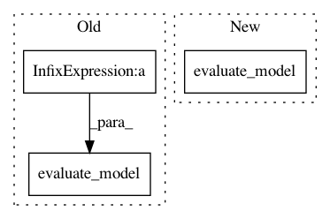

20070ca46f27964710a4f187d0437164e5a732c7,official/recommendation/ncf_main.py,,run_ncf,#Any#,175
Before Change
test_fname = os.path.join(
FLAGS.data_dir, FLAGS.dataset + "-" + constants.TEST_RATINGS_FILENAME)
neg_fname = os.path.join(
FLAGS.data_dir, FLAGS.dataset + "-" + constants.TEST_NEG_FILENAME)
assert os.path.exists(train_fname), (
"Run data_download.py first to download and extract {} dataset".format(
FLAGS.dataset))
tf.logging.info("Data preprocessing...")
ncf_dataset = dataset.data_preprocessing(
train_fname, test_fname, neg_fname, FLAGS.num_neg)
// Create NeuMF model and convert it to Estimator
tf.logging.info("Creating Estimator from Keras model...")
layers = [int(layer) for layer in FLAGS.layers]
mlp_regularization = [float(reg) for reg in FLAGS.mlp_regularization]
keras_model = neumf_model.NeuMF(
ncf_dataset.num_users, ncf_dataset.num_items, FLAGS.num_factors,
layers, FLAGS.batch_size, FLAGS.mf_regularization,
mlp_regularization)
num_gpus = flags_core.get_num_gpus(FLAGS)
estimator = convert_keras_to_estimator(keras_model, num_gpus, FLAGS.model_dir)
// Create hooks that log information about the training and metric values
train_hooks = hooks_helper.get_train_hooks(
FLAGS.hooks,
batch_size=FLAGS.batch_size // for ExamplesPerSecondHook
)
run_params = {
"batch_size": FLAGS.batch_size,
"number_factors": FLAGS.num_factors,
"hr_threshold": FLAGS.hr_threshold,
"train_epochs": FLAGS.train_epochs,
}
benchmark_logger = logger.get_benchmark_logger()
benchmark_logger.log_run_info(
model_name="recommendation",
dataset_name=FLAGS.dataset,
run_params=run_params,
test_id=FLAGS.benchmark_test_id)
// Training and evaluation cycle
def train_input_fn():
return dataset.input_fn(
True,
distribution_utils.per_device_batch_size(FLAGS.batch_size, num_gpus),
ncf_dataset, FLAGS.epochs_between_evals)
total_training_cycle = FLAGS.train_epochs // FLAGS.epochs_between_evals
for cycle_index in range(total_training_cycle):
tf.logging.info("Starting a training cycle: {}/{}".format(
cycle_index + 1, total_training_cycle))
// Train the model
estimator.train(input_fn=train_input_fn, hooks=train_hooks)
// Evaluate the model
eval_results = evaluate_model(
estimator, FLAGS.batch_size, num_gpus, ncf_dataset)
// Benchmark the evaluation results
benchmark_logger.log_evaluation_result(eval_results)
// Log the HR and NDCG results.
After Change
estimator.train(input_fn=get_train_input_fn(), hooks=train_hooks)
// Evaluate the model
eval_results = evaluate_model(
estimator, FLAGS.batch_size, num_gpus, ncf_dataset, get_pred_input_fn())
// Benchmark the evaluation results
benchmark_logger.log_evaluation_result(eval_results)
// Log the HR and NDCG results.
In pattern: SUPERPATTERN
Frequency: 3
Non-data size: 3
Instances
Project Name: tensorflow/models
Commit Name: 20070ca46f27964710a4f187d0437164e5a732c7
Time: 2018-06-20
Author: taylorrobie@google.com
File Name: official/recommendation/ncf_main.py
Class Name:
Method Name: run_ncf
Project Name: titu1994/MLSTM-FCN
Commit Name: b6308d07933d06e592539733b67c0b468d8efa49
Time: 2017-08-11
Author: titu1994@gmail.com
File Name: ck_model.py
Class Name:
Method Name:
Project Name: tensorflow/minigo
Commit Name: 2dd2efb5475cb42a21f0dacaef786c89869bf2de
Time: 2019-12-13
Author: tmadams@google.com
File Name: ml_perf/eval_models.py
Class Name:
Method Name: main